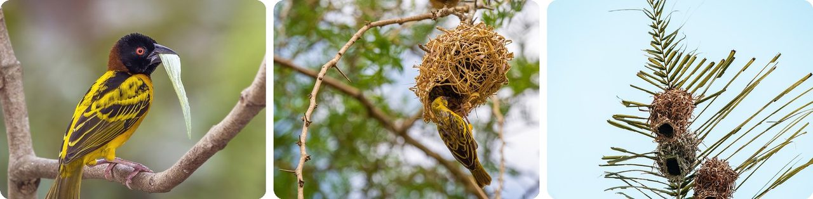
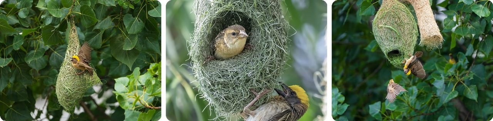
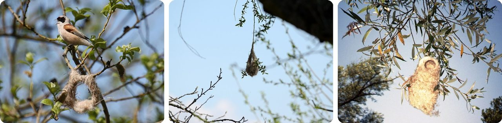
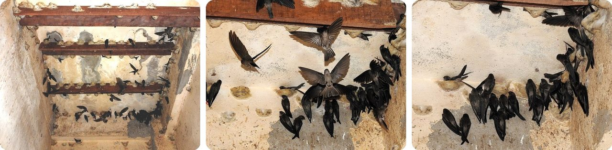
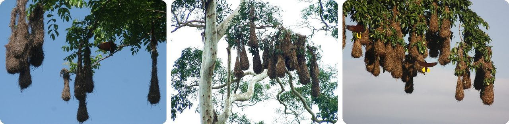
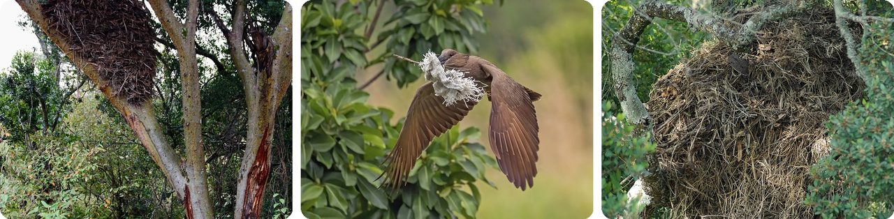
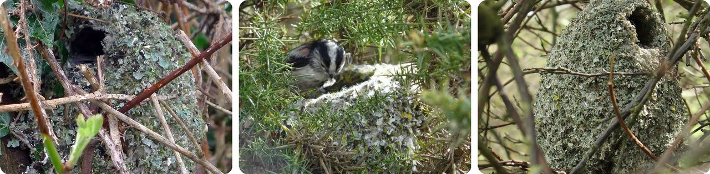
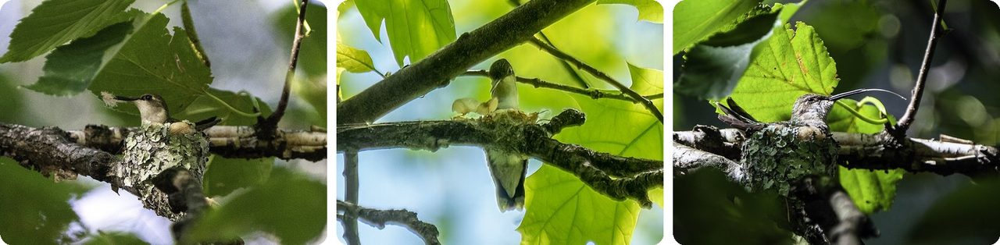
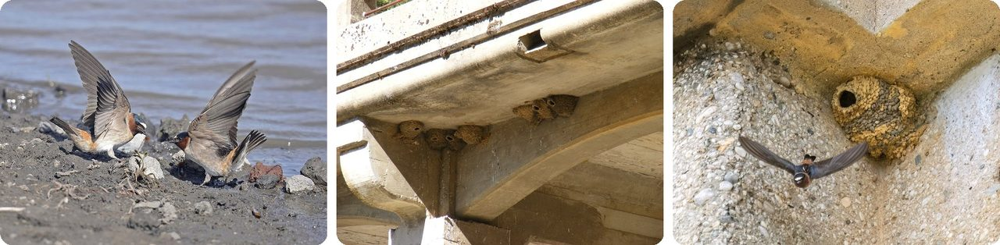
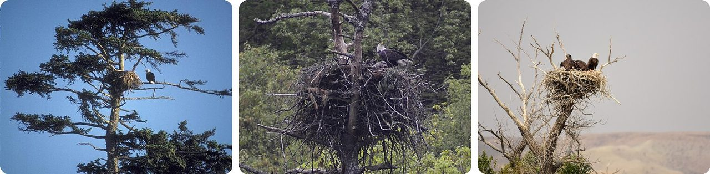

🌍 十大 神奇的鸟巢，以及鸟儿怎么盖房子
2026年10月29日
1. 🌍 村庄织布鸟用300根叶条“织”出一个家

在撒哈拉以南的大半个非洲，雄性村庄织布鸟会从棕榈叶和高高的草上撕下长长的叶条，然后一次叼一根飞回来。织一个巢大约要300根。它先织一个圈。它一只脚踩一根垂下来的细枝，在两根枝条之间织出一个环。接着它不停地往头前面这一边加料，环慢慢弯成半个球：这就是以后放蛋的房间。
织的过程完全是真功夫。它叼住叶条靠近末端的地方，折回来，松开，把头伸到巢壁另一边，再叼住，从小洞里穿过去。就这样来回穿，直到整根叶条都用完。织好的巢大约15厘米长，门开在底下，一棵树上能挂多达一百个。
换句话说，它只用嘴和脚，就织出了一座房子。
2. 🇮🇳 黄胸织布鸟要等雌鸟点头，才给新房装大门

黄胸织布鸟生活在印度和东南亚。雄鸟会剪下稻叶、草和棕榈叶的长条，每根20到60厘米长，来回飞多达500趟才能盖好一个巢。巢常常挂在水面上方的带刺树上，敌人很难够得着。它先盖出一个半成品，叫“头盔”，大约要8天。然后它倒挂在上面，扇着翅膀大声叫，招呼路过的雌鸟。雌鸟飞进来看一看。如果她满意，雄鸟才把活儿干完：在底下加一根长长垂下来的管子当入口。整个巢大约要18天。
巢的内壁上还会抹上一团团泥巴。有一种说法是，多出来的重量能让巢在大风里更稳。
就像样板房：有人签了字，才给装大门。
3. 🥿 在中欧，攀雀的巢以前被当成小孩的拖鞋

欧亚攀雀是一种很小的鸟，它把巢挂在柳树或桦树细枝的最尖上，常常就在水面正上方。这个巢是个软软的袋子，大约25厘米高，比一张打印纸短一点。攀雀用蜘蛛网、羊毛、动物的毛和软软的植物绒毛来盖巢。它把这些材料做成一个又厚又软的袋子。这袋子暖和到中欧的人以前真的拿它给小孩当拖鞋穿。
还有更妙的。它们在非洲的亲戚会做一扇假门。假门通向一个空房间，真正的入口是一块藏起来的盖片。大鸟进去后把盖片合上，黏黏的蜘蛛网就把它封住了。
说白了，这就是一只挂在树上、带暗门的毛线袜。
4. 🍜 爪哇金丝燕的巢全是用口水做的

东南亚的爪哇金丝燕盖巢根本不用树枝和草。它的巢只用自己的口水做成：一条条细细的口水丝，干了就变硬。雄鸟大约花35天，一层一层地盖，直接把巢粘在山洞的墙上，像个小架子。山洞里漆黑一片，这些鸟靠发出咔哒声、听回声来找路，就像蝙蝠一样。一个盖好的巢大约6厘米宽，重约14克，差不多是三枚美国5分硬币的重量。
人们把这种巢采下来炖燕窝汤（燕窝，yànwō）。在印度尼西亚和马来西亚，人们甚至把空房子改成金丝燕的家，在屋顶装上喇叭，播放金丝燕的叫声，把鸟引进来。
这是一座用口水盖的房子，而人们把它煮成汤喝。
5. 🇨🇷 蒙特祖马拟椋鸟的巢像大口袋一样垂下来，跟大人一样长

从墨西哥东南部到巴拿马中部的热带低地，蒙特祖马拟椋鸟成群住在一起。只有雌鸟盖巢，它们用纤维和藤条编出挂着的袋子，长60到180厘米。最长的跟一个大人一样高。这些巢挂在可高达30米的树上，差不多有10层楼那么高。一个鸟群通常有大约30个巢，有一群竟然有172个。
雌鸟忙着盖巢、孵蛋的时候，雄鸟们在互相打架。看家护院也是雌鸟的事：巨牛鹂（一种想偷偷把蛋下在别的鸟巢里的鸟）一靠近，雌鸟就冲上去把它赶走。
想象一棵树上挂满了几十个编织睡袋。
6. 🌍 锤头鹳的巢结实到人都能站上去

锤头鹳是一种褐色的水鸟，生活在非洲、马达加斯加和阿拉伯半岛。它的英文名 hamerkop 在南非荷兰语里是“锤子头”的意思，因为它的脑袋长得像把锤子。它的巢可以超过1.5米宽，结实到能撑住一个成年男人的体重。巢是夫妻俩一起盖的。它们先用树枝搭个平台，用泥巴粘牢。然后砌墙，再盖一个圆顶。门开在底下，用泥巴抹好，通进一条最长60厘米的走廊，走廊尽头才是育雏的房间。
有位研究人员估计，一个巢要用大约8,000根树枝或一捆捆的草，盖起来要10到14个星期。而且一对锤头鹳一年要盖三到五个巢，不管有没有在养小鸟。猫头鹰有时会搬进空着的巢里。
就像一对停不下来的建筑迷夫妻，盖了一座带走廊的小屋。
7. 🪶 银喉长尾山雀的巢是用天然魔术贴粘起来的

银喉长尾山雀是一种黑白相间、尾巴长长的小鸟，遍布欧洲和亚洲。它的巢是个有弹性的袋子，顶上有个小圆门。一个普通的巢要用超过6,000块材料：苔藓、蜘蛛丝、地衣、羽毛，还有蜘蛛的卵囊。秘诀在墙里。苔藓的小叶子像一个个小钩子，蜘蛛丝绕成小圈圈。把它们压在一起就粘住了，跟魔术贴的两面一模一样。
在外面，它贴上几百片浅色的地衣，让巢跟树皮混成一片。在里面，它铺上2,000多根软羽毛，给蛋保暖。
外面是钩子和圈圈，里面是羽毛床。
8. 🕸️ 蜂鸟的巢会跟着宝宝一起“长大”

北美洲东部的雌性红喉北蜂鸟独自盖巢。它用细小的芽鳞，再用蜘蛛丝把它们绑在一起，外面贴上地衣，看上去就像树枝的一部分，里面再铺上软软的蒲公英或蓟的绒毛。蜘蛛丝是最聪明的地方。它又轻、又结实、又特别有弹性。妈妈孵蛋的时候，巢紧紧贴着她的身体，把热量留在里面。等宝宝长大了，巢壁就撑开，腾出地方。蜘蛛丝还黏黏的，能把巢粘在树枝上。
最小的蜂鸟巢只有大约2厘米宽，比一枚美国25分硬币还小。
换句话说，这是一张跟着宝宝一起长大的婴儿床。
9. 🇺🇸 美洲燕在桥底下盖泥巴公寓楼

美洲燕（崖燕）用泥巴盖出葫芦形的巢，每个巢有一个小圆洞当门。同一群的燕子一起飞到同一个泥巴地，用嘴衔起一小团一小团泥，一次一团地带回来。它们把巢一个挨一个挤得紧紧的，还一层层往上叠，整个鸟群看起来就像一面陶罐墙。用黏土做的巢能用好几年，有些鸟群有2,000多个巢。
它们以前主要在北美洲西部的悬崖上筑巢。现在水泥桥和公路立交桥也一样好用，所以它们正在往东扩散。
说白了，这是一整栋用泥砖盖的公寓楼，一嘴一嘴地盖起来。
10. 🇺🇸 佛罗里达的一个白头海雕巢重将近3吨

白头海雕用树枝盖巢，建在靠近水边的大树高处，而且年年回到同一个巢。每年它们都会添上新材料，所以巢越来越大。时间久了，一个巢能有4米深、约1吨重。最高纪录是1963年在佛罗里达发现的一个巢。它2.9米宽、6.1米深，差不多有两层楼高，重约2.7吨，相当于两辆小汽车。这是有记录以来所有动物里最大的树上巢。
大多数海雕巢只能用大约五年。要么被暴风雨吹垮，要么重得把撑着它的树枝压断。美国中西部有一个巢，连续用了至少34年。
一场永远不停的装修，直到大树撑不住为止。
趣闻
第4条里的金丝燕巢，是人类吃的最贵的动物产品之一：按等级不同，最高能卖到大约每公斤9,500美元。红色的燕窝还更贵，最高每公斤14,000美元。新加坡的科学家发现，这种红色是山洞或燕屋空气里的气体跟白色燕窝起反应造成的。既然口水汤能比白银还贵，世界上最贵的食物，以及它们奇特的制作方法，也许就是下一个好吃又好玩的主题。
图片来源（Wikimedia Commons）
- #1: Village weaver (Ploceus cucullatus cucullatus) male with leaf.jpg by Charles J. Sharp, CC BY-SA 4.0
- #1: Village Weaver by the nest.jpg by Timothy Akolamazima, CC BY-SA 4.0
- #1: Village Weaver Nest 1.jpg by KwesiRaul, CC BY-SA 4.0
- #2: Baya Weaver courtship at helmet nest, Kathmandu Valley.jpg by Sunuwargr, CC BY-SA 4.0
- #2: Baya weaver building its nest.jpg by Prasan Shrestha, CC BY-SA 4.0
- #2: Baya Weaver Welcomes Mate to New Nest, Kathmandu Valley.jpg by Sunuwargr, CC BY-SA 4.0
- #3: Remiz pendulinus -Estonia -singing by partly built nest-8.jpg by Alastair Rae, CC BY-SA 2.0
- #3: Nest Remiz pendulinus.JPG by Nicolas Weghaupt, CC0
- #3: Remiz pendulinus nest in Greece.jpg by ΧΑΡΑΛΑΜΠΟΣ ΓΚΟΥΒΑΣ, Attribution
- #4: Edible-nest Swiftlet Aerodramus fuciphagus nest best by Raju Kasambe 01.jpg by Dr. Raju Kasambe, CC BY-SA 4.0
- #4: Edible-nest Swiftlet Aerodramus fuciphagus nest best by Raju Kasambe 02.jpg by Dr. Raju Kasambe, CC BY-SA 4.0
- #4: Edible-nest Swiftlet Aerodramus fuciphagus nest best by Raju Kasambe 03.jpg by Dr. Raju Kasambe, CC BY-SA 4.0
- #5: Montezuma Oropendola nests (5684285270).jpg by caspar s, CC BY 2.0
- #5: PMontezumaNests03.jpg by Tim Ross, Public domain
- #5: Montezuma's oropendola.jpg by Charles J. Sharp, CC BY-SA 3.0
- #6: Hammerkop Nest Kenya 2012.jpg by Batra, CC BY-SA 3.0
- #6: Hamerkop (Scopus umbretta umbretta) collecting for nest.jpg by Charles J. Sharp, CC BY-SA 4.0
- #6: Scopus umbretta nest1.jpg by JerryFriedman, CC BY-SA 3.0
- #7: Completed Domed Nest Of Long-tailed Tit - Flickr - gailhampshire.jpg by gailhampshire from Cradley, Malvern, U.K, CC BY 2.0
- #7: Long-tailed Tit nest building Dungeness, Kent 07 Mar 2009.jpg by Alan Shearman, CC BY 2.0
- #7: Long Tailed Tit Nest 10-04-12 (6919194038).jpg by nottsexminer, CC BY-SA 2.0
- #8: Ruby-throated hummingbird on nest 03.jpg by Lorie Shaull, CC BY-SA 4.0
- #8: Ruby-throated hummingbird making a nest (71424).jpg by Rhododendrites, CC BY-SA 4.0
- #8: Ruby-throated hummingbird on nest 02.jpg by Lorie Shaull, CC BY-SA 4.0
- #9: Cliff Swallow 04.jpg by VJAnderson, CC BY-SA 4.0
- #9: Cliff Swallow nests, California.jpg by J.smith, CC BY-SA 3.0
- #9: Cliff swallow nest (40366).jpg by Rhododendrites, CC BY-SA 4.0
- #10: Bald eagle nest tree.jpg by Jacobson, Mike, Public domain
- #10: Cherokee NF bald eagle nest (20738554196).jpg by US Forest Service - Southern Region, Public domain
- #10: Bald eagle at Seedskadee National Wildlife Refuge (51342301074).jpg by USFWS Mountain Prairie, Public domain
_male_with_leaf.jpg){kind=link}


.jpg){kind=link}


_collecting_for_nest.jpg){kind=link}


.jpg){kind=link}

.jpg){kind=link}


.jpg){kind=link}

.jpg){kind=link}
.jpg){kind=link}